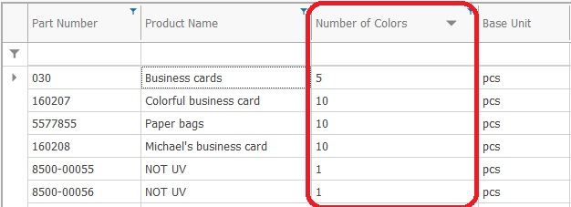

Stored attributes
Stored attributes, also known as custom properties or custom attributes, allow you to extend the data model with user-defined attributes. They store values in the database, expanding the system tables.

Similarity with system attributes
Stored attributes behave mostly like system attributes:
They can be shown in columns, grouped and filtered in navigators.
They can have default values and be shown in the view of data forms.
Most of the time, you won't be able to distinguish between system and stored attributes.
It's up to the implementation team to define the latter, which is subject to implementation requirements.
Note
Many stored attributes can easily be defined and set as 'required'. However, this might endanger the whole ERP implementation, since requiring too much data entry for each operation can alienate the end users from the system. Business needs should be carefully balanced with the end-user comfort.